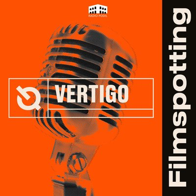
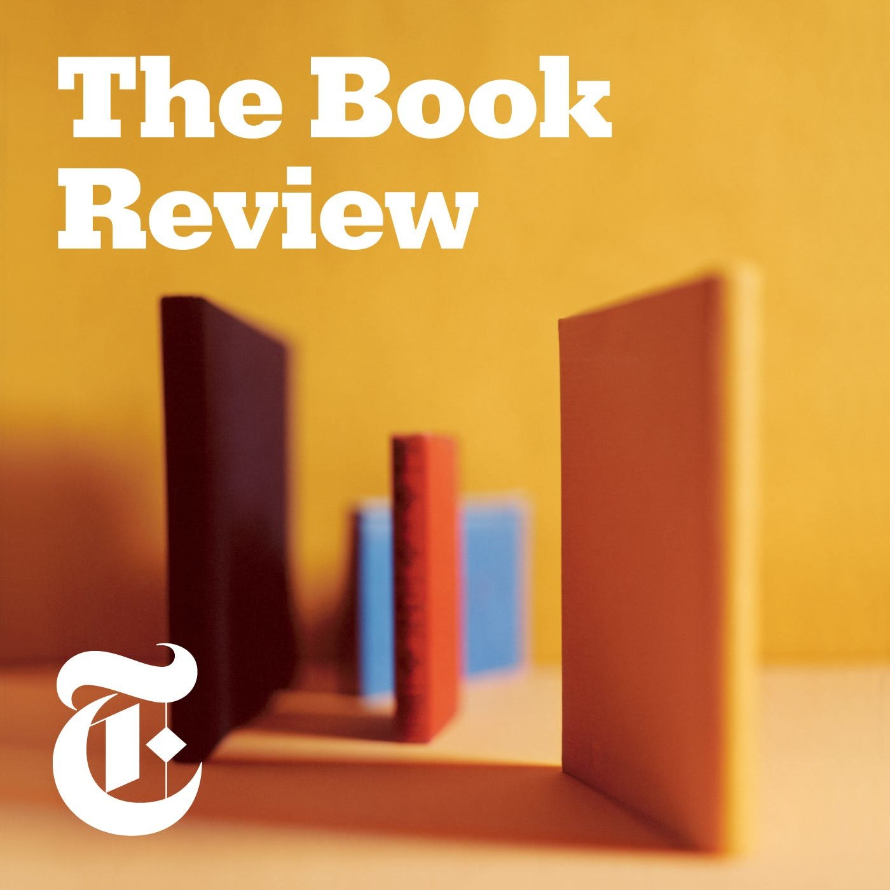
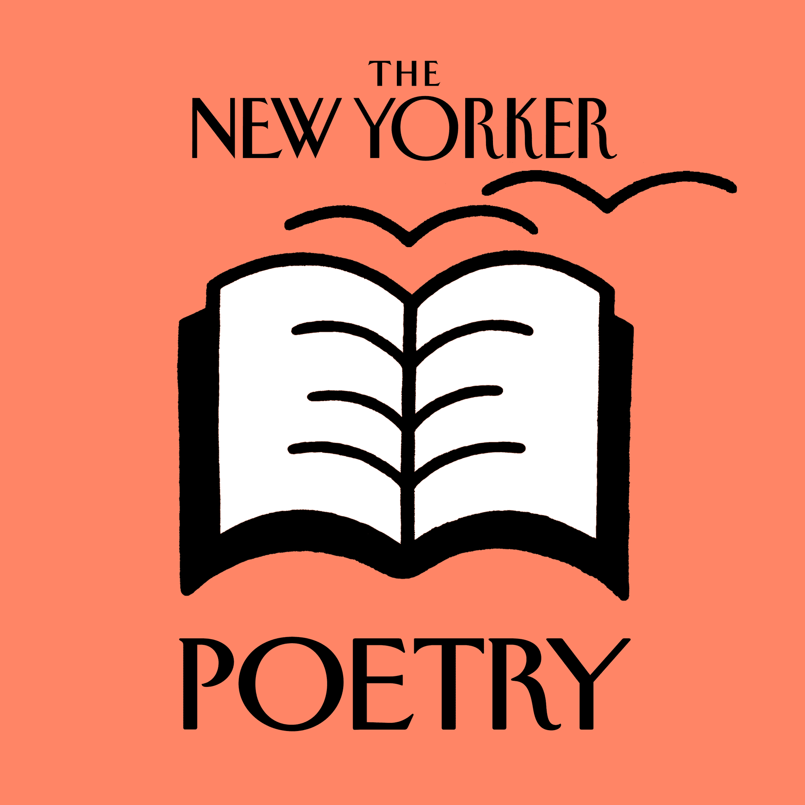
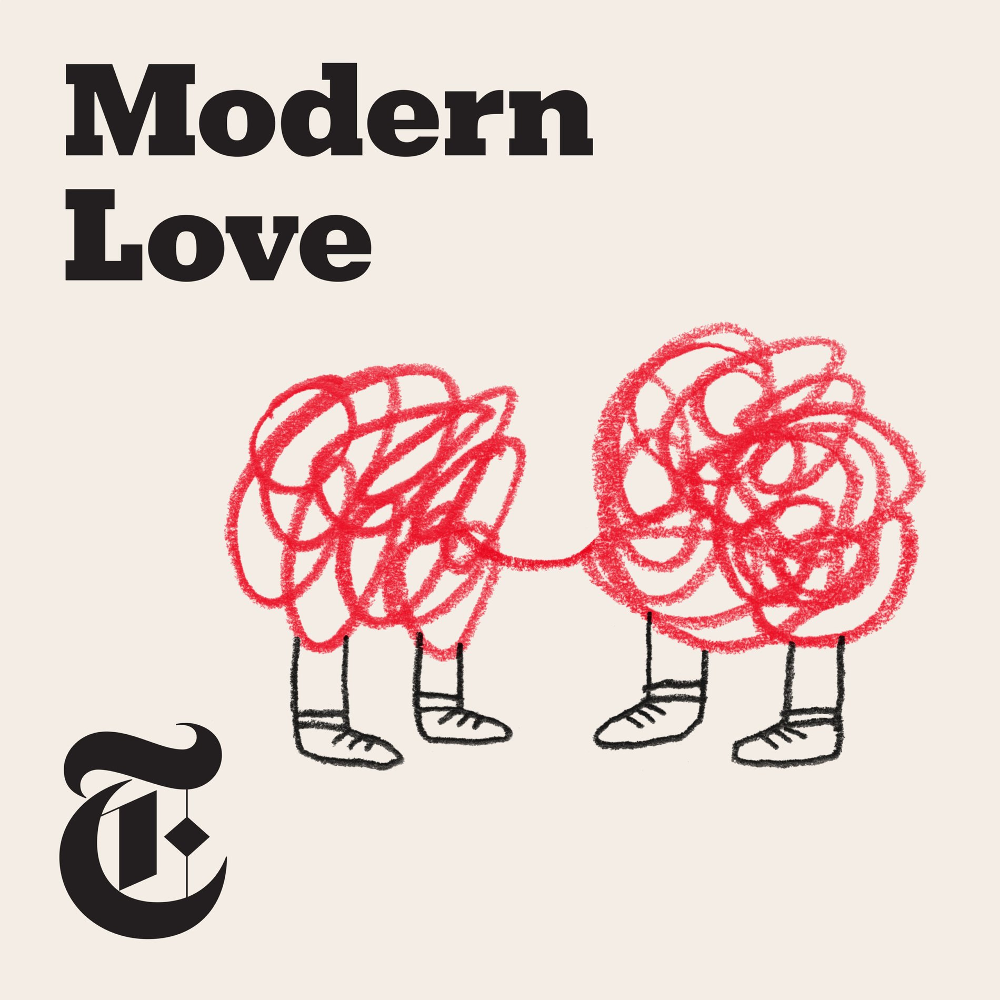
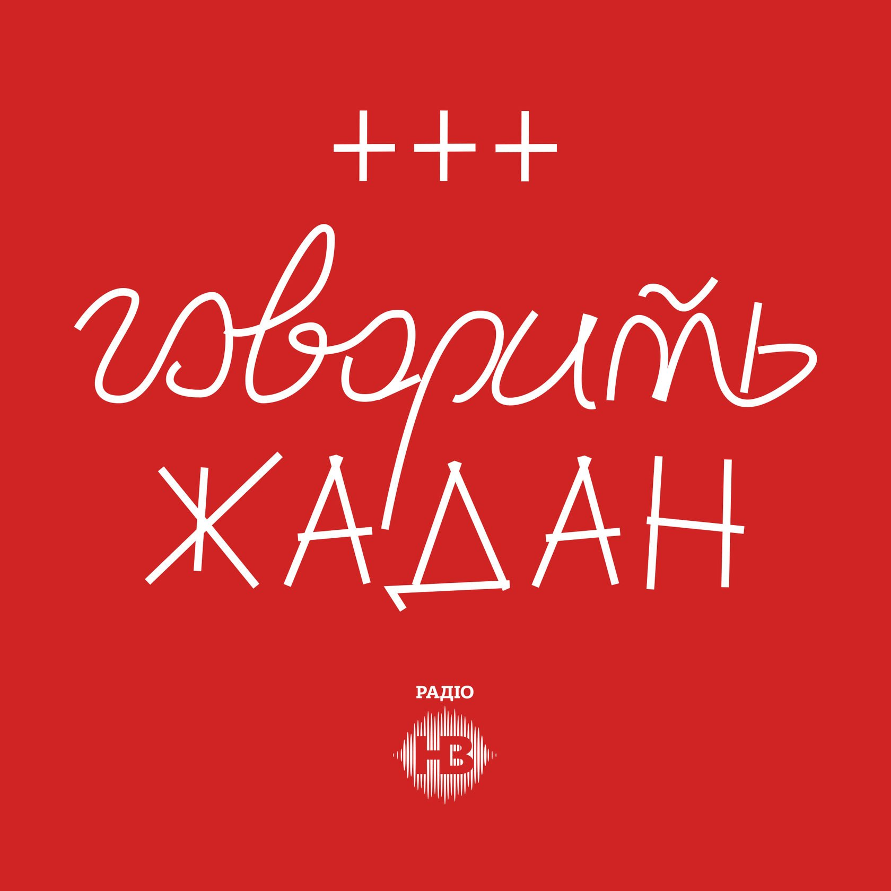
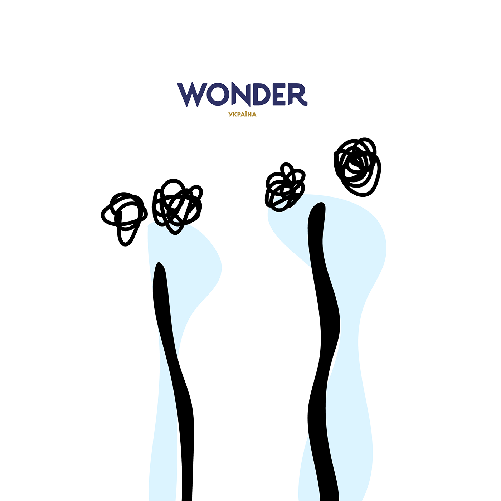
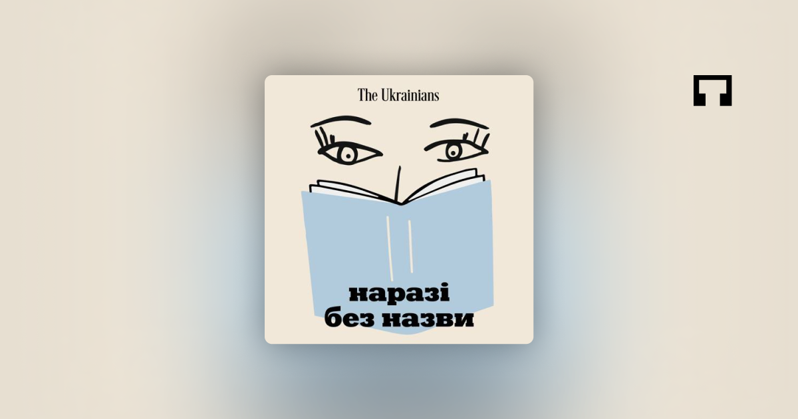

Список подкастів:
Vertigo. Filmspotting
Мені дуже сподобався другий сезон цього подкасту, розмовний. Журналістка та кінокритикиня Анна Дацюк запрошує до себе в подкаст людей українського кіно й обговорює з ними індустрію. Розмови короткі та місткі. Я цікавлюся кіно як глядачка й хотіла б краще розуміти, що відбувається з українськими фільмами, звідки беруться сюжети та як працюють режисери, який уплив має критика та відгуки. У мене так з усіма розмовними подкастами про культуру: хочу надихнутися, запозичити щось для себе та підглянути за життям інших.
Лінк на подкаст Vertigo. FilmspottingThe Book Review
Це подкаст видання The New York Times. Коли я читаю класичні твори на кшталт романів Кундери, то завжди шукаю рецензії, які виходили на них у NYT. Колись купилася на те, що там ніколи немає літературознавства задля літературознавства. Ці огляди лаконічні, у доброму сенсі заземлені – поєднують книжку зі світом, у якому вона існує. Від подкасту залишається точно таке ж враження глибокого, але легкого обговорення літератури та життя самих письменників.
Лінк на подкаст The Book ReviewThe New Yorker: Fiction and Poetry
The New Yorker обрав суперпростий формат, і він, на мою думку, найкращий. Сучасні автори читають тексти старших колег, що були колись опубліковані в New Yorker, а потім описують враження. Це найпростіший і дуже приємний спосіб читання та рефлексії, а ще можна перевірити, чи ті ж питання я поставлю до оповідання Еліс Манро, що їх поставить собі Маргарет Етвуд. Дуже приємне відчуття інтелектуального товариства. А ще для мене це спосіб знайти для себе нових авторів, яких захочу почитати.
Лінк на подкаст The New Yorker: Fiction and PoetryModern Love
Усе починалося з щотижневої колонки в одній із головних газет планети – The New York Times. Далі Modern Love стало ще й книгою, телешоу і, оскільки воно в цьому тексті, подкастом. Загалом це чуттєві, веселі, сумні, іронічні, пронизливі й душевні історії про те, якою різною буває любов. Як люди сходяться, розходяться, як кохаються та сваряться, як живуть і вмирають – разом і поодинці. Тексти з колонки читають суперзірки (скажімо, Ума Турман про увагу до трагедії в сім’ї) і просто зірки (ну, наприклад, актор із «Статевого виховання» – про те, чому чоловіки не кажуть один одному: «Я тебе люблю»).
Лінк на подкаст Modern LoveГоворить Жадан
Головний письменник країни кличе у студію яскравих людей із різних сфер (Олег Скрипка, Уляна Супрун, Віктор Придувалов) і говорить із ними. Говорить як Жадан. Не думаю, що потрібна ще якась додаткова аргументація, правда ж?
Лінк на подкаст Говорить ЖаданЇЇ подкаст
Це подкаст про сильних жінок. Саме з нього почалася моя історія з подкастами. Wonderzine Україна покликало мене в цей проєкт як гостю. Потрібно було виділити годину часу та уважно послухати. Вийшла на пробіжку. За якийсь час вийшло так, що я прослухала всі епізоди подкасту.
Лінк на ЇЇ подкастПростими словами
По-перше, я вже не перший рік у терапії й мені цікаво послухати інші думки з тем, що я колись порушувала зі своїм терапевтом. По-друге, я розумію, наскільки зараз важливо показувати, що терапія, психологія – це не про хворих на голову, це про своє ментальне здоров’я.
Лінк на подкаст Простими словамиНаразі без назви
Наразі без назви — це щотижневий подкаст, в якому Анастасія Євдокимова і Богдана Неборак ставлять одна одній складні питання про культуру й іноді читають книжки.
Лінк на подкаст Наразі без назви